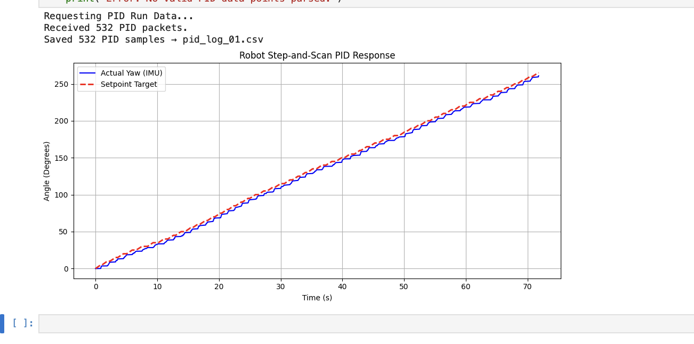
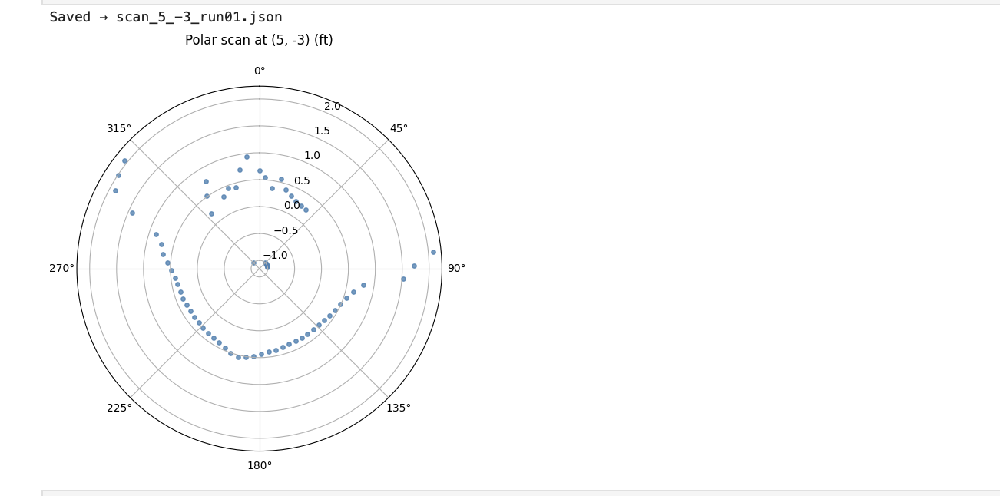
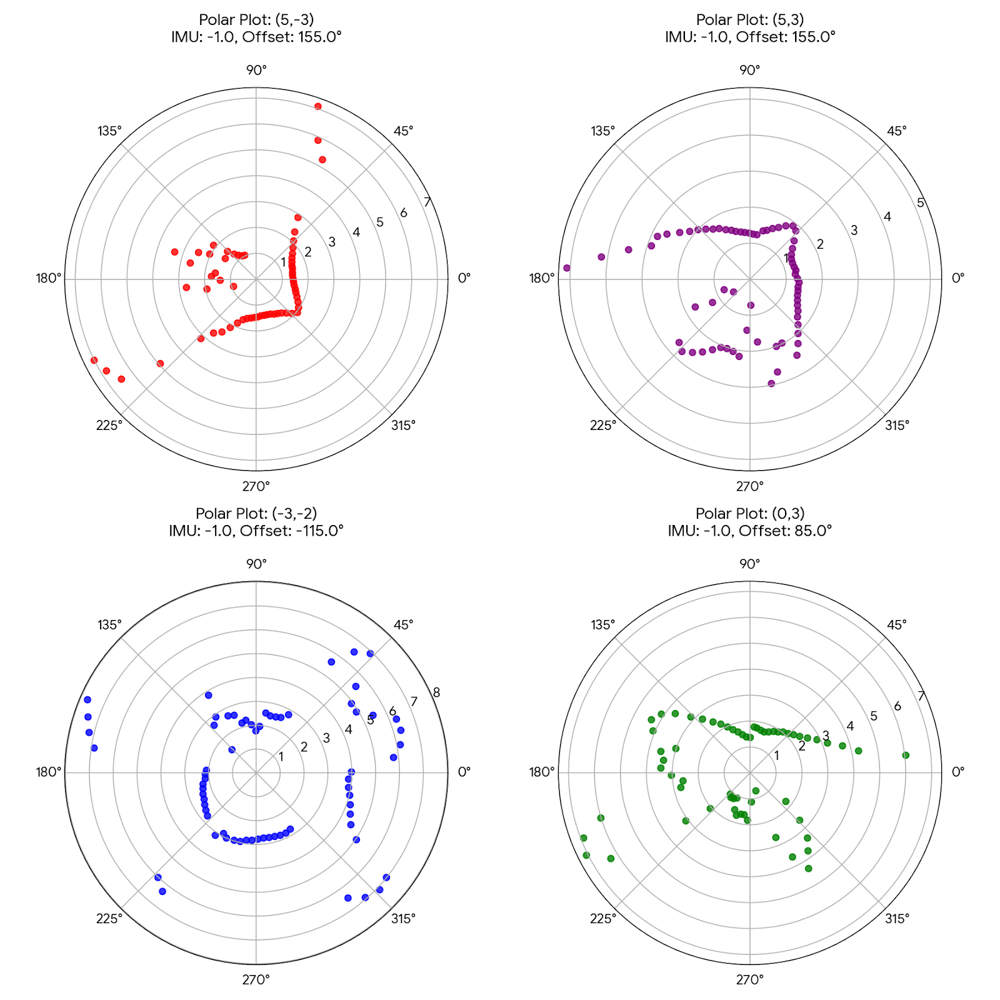
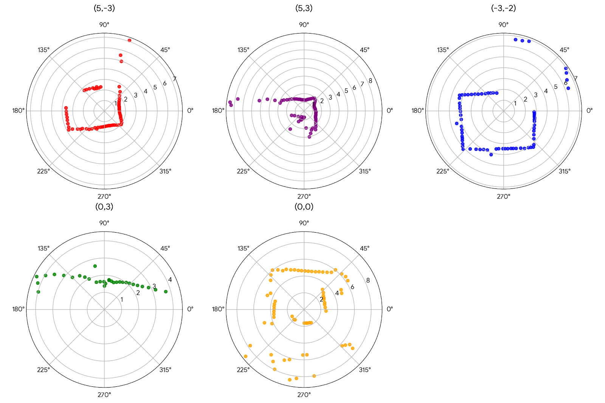
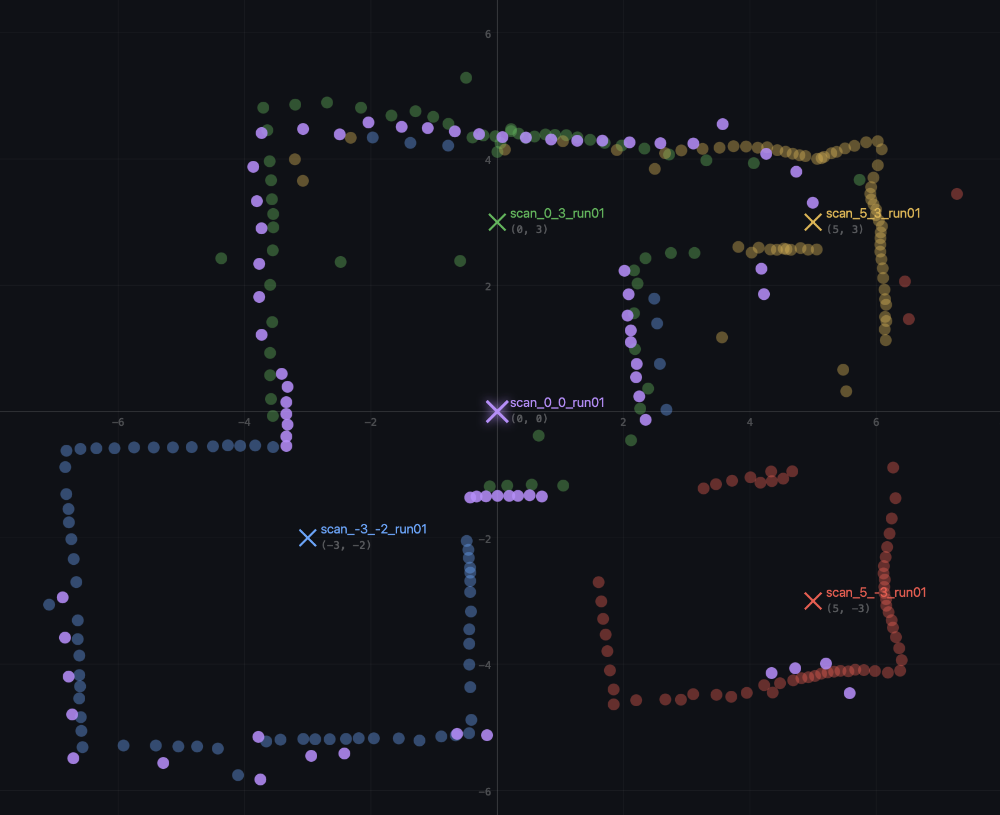
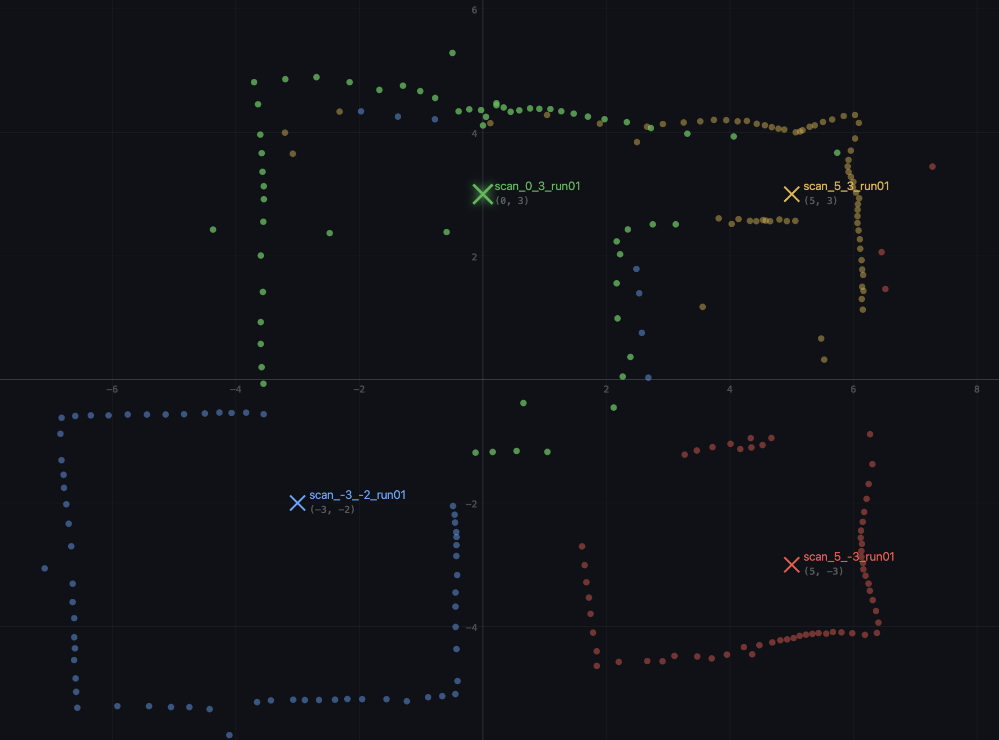
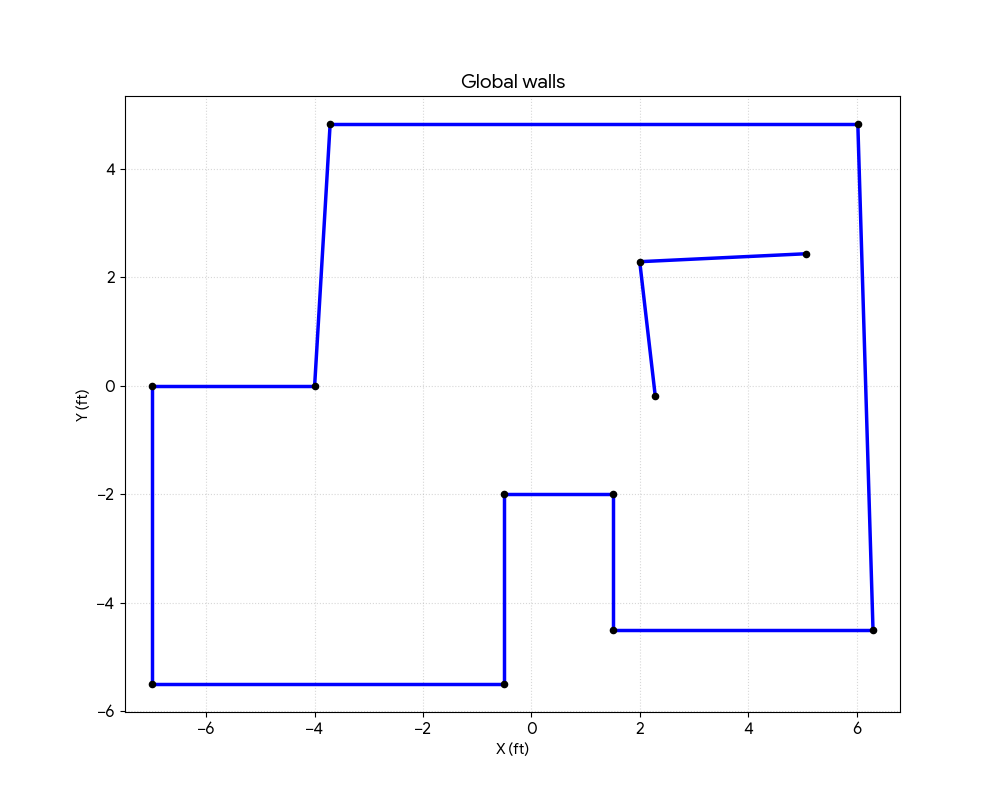

1. Objective and Approach
The objective of this lab was to generate a 2D line-based map of a static room using a ToF sensor. I approached this using PID control on orientation (a "step-and-scan" method). The robot was placed at 5 marked locations in the room (0,0), (0,3), (5,3), (5,-3), and (-3,-2). At each location, the robot rotated in discrete increments (10° for rapid 36-point scans, and 5° for dense 72-point scans), stopping to take averaged ToF readings.
2. Orientation Control & On-Axis Turning
To ensure the map was not warped by the robot translating while turning, achieving a almost zero-radius point-turn was critical. Initially, motor deadband mismatches caused the right wheel to stall at low PID outputs, causing the robot to pivot like a compass. This occurred because I could not use the static friction-breaking code from previous labs, meaning the tiny PWM values on the lower-powered side could never break free from the deadband. To balance the movement, I taped the wheels on a single side. {Took me a few tries to get it to not slip :) }
To fix this, I applied a 90% voltage multiplier to the left wheel before mapping the raw PID speed into the respective hardware deadbands:
void drive_spin(float pid_out) {
int speed = (int)fabsf(pid_out);
if (speed < 1) { stop_motors(); return; }
// Multiplier applied BEFORE deadband mapping to prevent stalling
int speed_l = speed;
int speed_r = (int)(speed * 0.90f);
int pwm_l = map(speed_l, 1, 255, DEADBAND_L, 255);
int pwm_r = map(speed_r, 1, 255, DEADBAND_R, 255);
}Video 1: 10° increment scan (36 points).
Video 2: 5° increment scan (72 points).
To quantify the PID performance, I logged the actual IMU yaw versus the setpoint during a scan. As seen in the step-response graph below, the controller is critically damped — it rapidly snaps to the 5° increments with no overshoot, settling cleanly within the ±1.5° acceptance threshold.

Figure 1 — PID staircase step response. The actual yaw (blue) tracks each 5° setpoint step with no overshoot, confirming critically damped performance within the ±1.5° threshold.
2.1 Theoretical Error Analysis (4×4 m Room)
If performing an on-axis turn in the center of a 4×4 m empty room, the maximum distance to the corners is 2.828 m.
- ToF Error: At 2.8 m, sensor noise is roughly ±28 mm.
- Angular Error: My code accepts an error of 1.5°. A 1.5° deflection at 2.8 m causes a lateral shift of 2828 × tan(1.5°) ≈ 74 mm.
- Physical Pivot: Despite deadband calibration, minor floor slip causes the robot's center to drift by ~15 mm over 360°.
- Conclusion: The worst-case maximum error (in the far corners) is (4.6 in). The average error along the closer flat walls is ~30–40 mm (1.5 in).
3. Reading Distances (State Machine)
To guarantee clean ToF data, the robot utilized a non-blocking state machine. Once the PID reached the target angle, the motors killed, and the robot waited SETTLE_MS (400 ms) for chassis vibrations to dampen. It then took 5 ToF readings with 30 ms delays and averaged them.
Crucially, the Arduino logged the actual DMP yaw, not the nominal target angle, ensuring the plotted map reflected reality.
// Inside run_scan_step()
} else if (scan_state == SCAN_READING) {
float sum = 0; int valid = 0;
for (int i = 0; i < 5; i++) {
// ... wait for ready ...
int d_mm = distSensor.getDistance();
if (d_mm > 0 && d_mm < 4000) { sum += d_mm; valid++; }
delay(30);
}
float avg_dist_m = (sum / valid) / 1000.0f;
scan_angle[scan_idx] = current_yaw_rel; // Log ACTUAL IMU angle
scan_dist[scan_idx] = avg_dist_m;
// ... advance step ...4. Transformation Matrices and Merging
The CSV data was downloaded over BLE and parsed in Python. To convert the distance readings into the global reference frame, I applied a 2D transformation matrix. The sensor offset (0.08 m) was added to the ToF distance to represent the vector Psensor. The global point Pworld was calculated by rotating Psensor by the actual IMU angle θ and translating it by the robot's coordinates on the grid.
R(θ) = [[cos θ, −sin θ], [sin θ, cos θ]]
Pworld = [xrobot, yrobot]T + R(θ) · [dist + 0.08,
0]T

Figure 2 — Raw polar scans (set 1) from one of the marked positions.

Figure 3 — Raw polar scans (set 2) showing the denser 5° increment datasets.

Figure 4 — Example of the Averaged polar plots. Multiple scan passes per position are averaged to reduce noise.
5. Post-Processing & Corrections
When merging the point clouds, two distinct environmental errors required post-processing corrections before wall generation:
- IMU Mirroring: The IMU angles increased clockwise, while Python math assumes counter-clockwise. This mirrored the room layout. I corrected this by applying a −1.0 multiplier to the angles (IMU_DIRECTION = -1.0).
- Physical Wall Deflection: One of the wooden walls appeared to be measured closer than reality. My best hypothesis is that the robot spiraled when its wheels caught the tape on the floor during certain scans, causing it to travel in an oval revolution path rather than a pure point-turn. This mechanical issue was fixed in later scans, and I manually tweaked the positional array of this specific cluster in Python to bring it back in line with the physical measurements of the room.

Figure 5 — Stitched point cloud including the (0,0) origin scan.

Figure 6 — Stitched point cloud with the (0,0) origin scan removed for clarity.
6. Conversion to Line-Based Map
To convert the unified, orthogonal point cloud into a format suitable for the simulator, I needed to extract distinct mathematical line segments from the raw scatter data. Because ToF sensors inherently capture noise, stray reflections, and "splatter" near edges, a standard linear regression (like least-squares) would be heavily skewed by these outliers.
To solve this, I applied the RANSAC (Random Sample Consensus) line-fitting algorithm to the unified global point cloud. RANSAC is highly robust against outliers because, rather than trying to fit a line to all data points at once, it repeatedly selects random, small subsets of points to generate a mathematical line. It then tests the entire point cloud against that line to see how many points agree with it (falling within a tight distance threshold as inliers). By iteratively running RANSAC over the data and removing the best-fit inliers after each pass, the algorithm successfully identified the dominant structural walls of the room while mathematically ignoring the noisy ToF splatter.
Once the dominant lines were mathematically fitted, I extracted their physical start and end coordinates. Using this automated RANSAC approach, I isolated 12 continuous segments representing the lower perimeter, the top wall, and the internal island obstacle:
# global walls (ft) — 12 continuous segments
x_start = [-7.000, -7.000, -0.500, -0.500, 1.500, 1.500, 6.300, 6.020, -3.714, -4.000, 2.283, 1.997]
y_start = [0.000, -5.500, -5.500, -2.000, -2.000, -4.500, -4.500, 4.830, 4.830, 0.000, -0.184, 2.290]
x_end = [-7.000, -0.500, -0.500, 1.500, 1.500, 6.300, 6.020, -3.714, -4.000, -7.000, 1.997, 5.073]
y_end = [-5.500, -5.500, -2.000, -2.000, -4.500, -4.500, 4.830, 4.830, 0.000, 0.000, 2.290, 2.437]
Figure 7 — Global walls without right-side wall distance tweaked. The 12 line segments faithfully reproduce the room's indented perimeter and internal island obstacle.
AI Usage: AI was used in this lab for cross-checking the transformation matrix logic, debugging the polar-to-Cartesian conversion, and reviewing the post-processing pipeline.